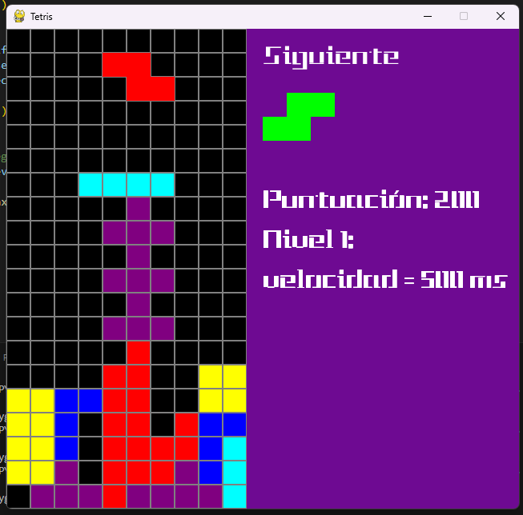

Juegos
Proyectos de desarrollo de software enfocados en lógica, interacción y resolución de problemas. Incluye pequeños videojuegos y ejercicios programados que demuestran el uso de estructuras, algoritmos y diseño funcional.

Breakout Jade
Breakout hecho por Jade en 3er semertre.
Este es un viedejuego hecho en pythn y pygame, la pelota rebota con el jugador y los bloques, los bloques desaparecen y suman puntos, si la pelota llega a caer se retara una vida. Tiene un estilo vivido y sencillo para darle un toque de dificultad y moderno.

Breakout Alex
Breakout hecho por Alex en 3er semertre.
Este juego fue hecho con pygame y python en la aplicacion de visual studio code, es un juego breackout clasico donde se tienen que romper los bloques flotantes, al pasar el nivel se aumentan el numero de bloques.

Breakout Jocy
Breakout hecho por Jocy en 3er semertre.
Es el calsico juego de Breack out pero con una paleta de colores hermosa, este pequeño videojuego eesta hecho en python con ayuda de pygame.

Buscaminas
Buscaminas cn diferentes niveles y diferente dificultad para cada uno, hecho por Jade y Jocy.
Este juego de buscaminas esta creado con python y pygame, aunque luzca como un juego sencillo realmente es un juego dificil de hacer. Desde crear el tablero hasta hacer que las bombas aparezvan de forma aleatria todo fue un reto.

Buscaminas Código
Código del buscaminas.
En la imagen se puede ver el codigo del buscaminas realizado en python con ayuda de pygame. Se muestra la creacion de botones y el control de mouse dentro del juego para detectar las bombas y hacer verificacion de haber ganado o perdido.

Pin Pong Alex
Pin Pong hecho por Alex en 3er semestre.
Este es un codigo hecho en python con pygames para hacer el juego clasico pong, en la imagen se muestra como se imprime el marcador, si la pelota toca en el borde del lado contrario el jugador se le suma un punto. La pelota acelera cada vez que rebota en un jugador aumentando la dificultad conforme pasa el tiempo.

Pong Código Jade
Código del pin pong hecho por Jade.
Este es un codigo hecho en python con la extencion de pygames para hacer el juego clasico pong, en la imagen se muestra como se imprime el marcador, el si la pelota toca en el lado izquierdo se da un punto al jugador dos y al contrario si choca en el borde derecho se da un punto la jugador uno. La pelota acelera 1.1 cada vez que rebota en un jugador aumentando la dificultad conforme pasa el tiempo.

Tetris
Juego tetris hecho por Alex y Rebeca.
El famoso juego tetris pero ahora hecho en python con ayuda de pygame. Este juego usa la funcion de random para imprimir piezas diferentes cada vez.